傳福音流程
Flow Chart

各步驟精要
了解對屬靈事物的看法
主要目的：初步了解和計劃怎傳福音，引導對方思考天堂/地獄
✅你覺得人死咗之後會點？
✅你信唔信有天堂/地獄？（如果唔想提「死」字）
✅你信唔信有神？
❌挪亞方舟（太間接，和天堂/地獄關係較少）
好人測試
中心信息：人都有罪，應該落地獄作為懲罰
- 你覺得自己係咪一個好人？
- 你有冇講過大話/粗口/發脾氣/用言語傷害人？
- 如果神根據呢啲嘢審判你，你覺得會有罪定無罪？
- 會得到獎賞定係懲罰？
- 似係天堂定地獄？
反對一：我冇殺人/我嘅罪冇咁嚴重到落地獄
- 亂拋垃圾就會被罰，無論你有冇犯其他罪；得罪神也是如此
反對二：人人都有犯罪
- 就算人人亂拋垃圾，唔代表你可以免罪
反對三：我做好事多過壞事
- 如果你捐款做慈善，能否免去亂拋垃圾的罰款？
反對四：我唔覺得自己有錯
- 在別人的家中需要遵循規則，否則就得罪別人；創造宇宙的神也有權設定祂的規則，不遵守祂的規則就是得罪神
福音
中心信息：耶穌替我哋承擔罪嘅刑罰，只需要我哋相信
- 點先唔使落地獄？
- 如同罰單需要有人來支付，地獄的刑罰要麼我們承受，要麼別人替我們承受
- 所以耶穌嚟到世界，死喺十字架上，為我哋承擔罪嘅懲罰，三日之後從死裡復活
- 佢唯一嘅要求，就係要我哋全心相信佢為我哋嘅罪死喺十字架上
- 如果耶穌替你承擔咗刑罰，你死後會去邊？
- 如果你唔想落地獄，應該幾時信耶穌替你承擔你嘅罪？
反對一：上天堂需要做好行為/懺悔/悔改
- 犯罪後做好行為/懺悔/悔改，法官不會因此判人無罪；神也不會因為人的行為免去人的刑罰
反對二：祈求原諒可以免去地獄
- 犯罪後向法官尋求原諒也不能免罪，神也不會因為人求原諒而免罰
反對三：想自己承擔刑罰
- 如果你亂過馬路而被車撞，你不會拒絕救護車的幫助；同樣，你也不應拒絕耶穌的幫助
誤解一：不明白恩典
- 如果你我買外賣，得到$20，這叫報酬，不是恩典；神的救恩係白白的，不需要我們做事
測試對福音的理解
清楚得救
- 如果你企喺神嘅面前，神問你：點解我要俾你入天堂，你會點答？
- 如果100分滿分，你有幾肯定你可以上天堂？
因信稱義
- 如果你信耶穌之後，聽日犯咗五樣罪，然後死咗，咁最後會去邊？
- 假設有個朋友同你講佢會去天堂，因為佢覺得自己係個好人。咁你覺得佢死咗會去邊？
- 但如果另一個朋友同你講：「我會去天堂，因為有兩個原因。第一，因為耶穌為我嘅罪死；第二，因為我係個好人。」咁你覺得佢會去天堂定地獄？
- 做好事可唔可以令你上天堂？
感恩
- 如果做好事同入天堂冇關係，咁我哋點解要做好事呢？
- 耶穌救咗我地，我哋應該點樣做去報答佢呢？
成長
- 你知唔知點樣了解多啲關於耶穌嘅嘢？
- 點解要返教會？
Tips
- 不要只是單方面講，對方不明白福音，就無法相信
- 盡量不要使用基督徒術語：得救、火湖、救恩、悔改、信靠主、任何聖經人物、任何聖經書卷⋯⋯
- 最少問一個問題測試對方對福音的理解